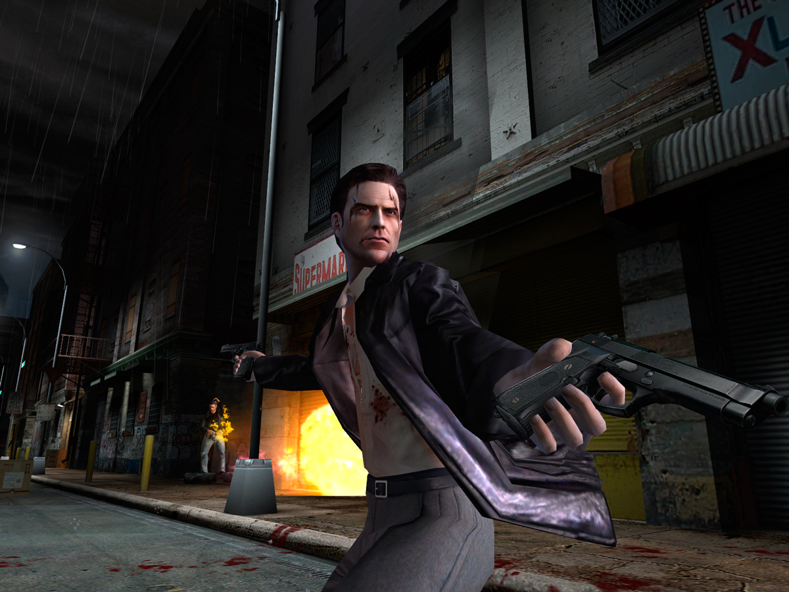
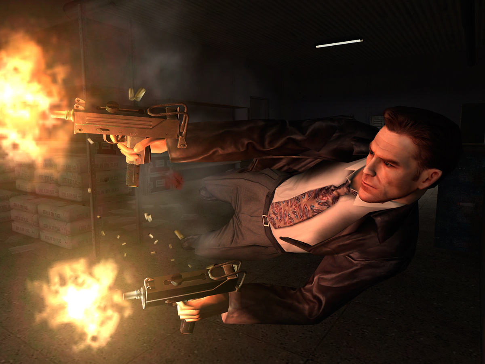
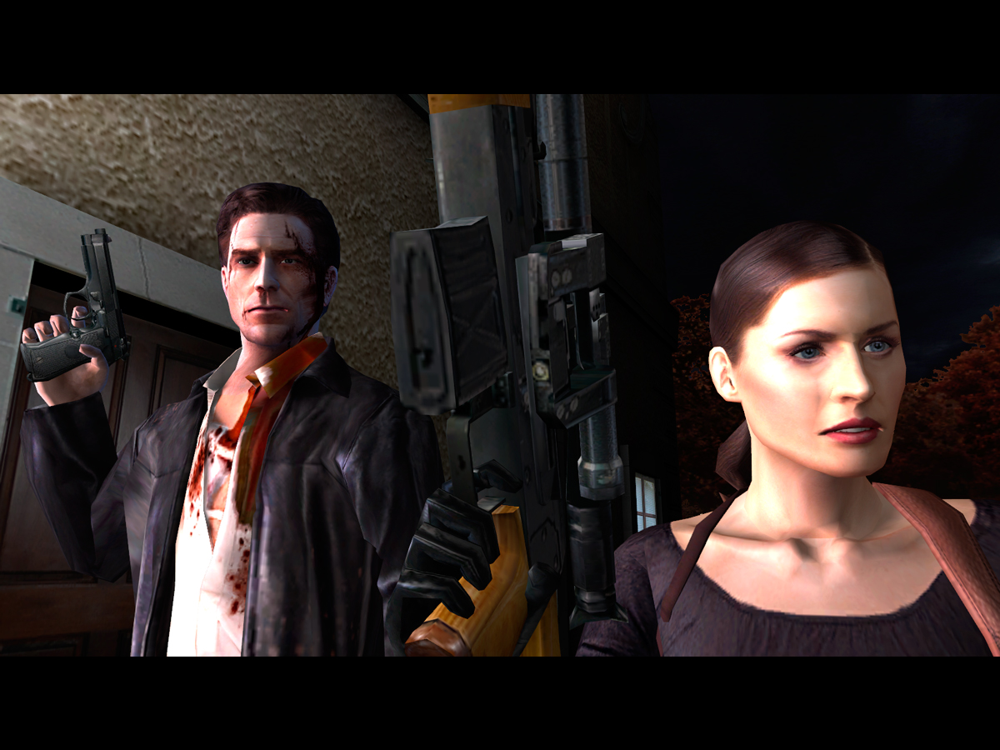
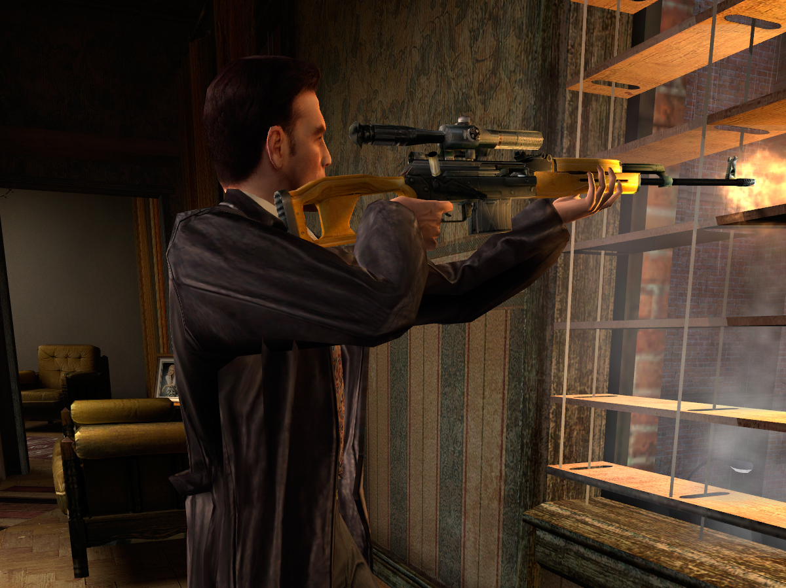

Max Payne 2: The Fall of Max Payne

Descripción
Continuamos la historia de nuestro protagonista, que vuelve a encontrarse en medio de una trama oscura llena de violencia, traiciones y giros argumentales. Esta vez, la historia también gira en torno a su complicada relación con Mona Sax, dando lugar a una historia de amor bastante trágica.
En cuanto a la jugabilidad, regresan los tiroteos a cámara lenta que caracterizaron a la primera entrega, pero esta vez mejorados, con nuevas maniobras y movimientos que hacen que los combates sean mucho más dinámicos y cinematográficos.
Capturas del videojuego




Información del videojuego
| Desarrollador | Plataforma | Fecha de lanzamiento |
|---|---|---|
| Remedy Entertainment | PC, PS2, Xbox | 14 de octubre de 2003 |